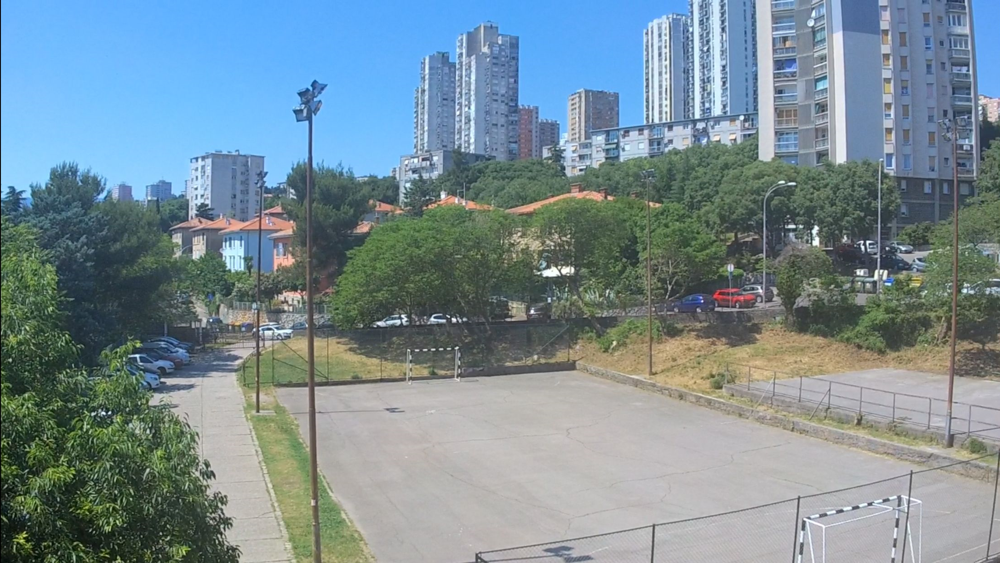

Drone recording
For my final project in high school I decided to make a promotional video for the school, during my time recording material for the video I was given multiple drones to test and freely use for my recording footage. While the first drone wasn't able to function properly the second drone was a success but only after downloading the app for the model. While the process of installing the app and connecting it to the drone was complicated the recording was rather simple.

I tested the drones range as well as the quality of their footage, which was severely lacking. The drones while promising 4k quality resolution were only able to provide 720p footage at best and 144p at worst. Regardless the experience was remarkable and fun, and the provided footage was unique and added a certain level of professionalism into the project.
